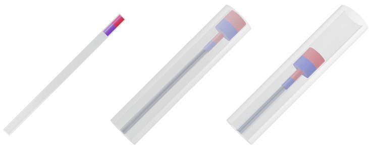

Magnetic navigation · yantai_ctmcr_liu2024
Yantai CT-MCR
Yantai concentric-tube magnetic continuum robot (CT-MCR): nested silicone tubes of five sizes and a bundle of magnetic thin flexible tubes with N52 magnetic particles, steered in a 3D Helmholtz coil


- Family
- Magnetic navigation (magnetic-navigation)
- Devices
- own CT-MCR: commercial vinylmethylsilicone (VMQ) tubes phi 0.8x0.25, 1x0.25, 3x0.5, 5x0.5 and 7x0.5 mm (OD x wall), nested; magnetic N52 NdFeB particles held at the end of a bundle of magnetic thin flexible tubes, removable and replaceable inside the tubes to change stiffness and form a working channel (Sec. 2.1, 2.3)
- Degrees of freedom
- tip attitude by the field direction (torque); advance, retraction and segment-by-segment recovery by stretching and pulling the tubes at the proximal end (Sec. 2.1, 2.5); DOF count N.R.
- Push
- Magnetic
- Twist
- Field direction
- Tested up to
- Phantom
- Sim-to-real
- None found — No simulation-trained controller found for this robot.
Testing
- Highest level
- Phantom
- What was tested
- bench: free bending angle of three 15 cm VMQ tubes and of the assembled multi-section tube in the vertical plane (Fig. 4C-D); effective driving angles at 20 mT with the field at -90 and 135 deg for four tube combinations (Sec. 2.4, Fig. 5); phantom: navigation of a 3D-printed branching vessel model past obstacle paths with tube exchange (Sec. 2.5, Fig. 6), capture and recovery of foreign objects, one area twice and two areas (Sec. 2.6, Figs. 7-8, Videos S2-S4); repeat counts and success rates N.R.
- Key numbers
- field 20 mT (Sec. 2.4); N52 particles remanent magnetisation 182 emu/g, coercivity 0.2 T (VSM, Sec. 2.2, Fig. 3B); vessel model ports phi 10 to phi 1 mm (Sec. 2.5); no numeric angle, error or time in the text (angles are in Figs. 4-5)
Mechanism
- Push (translation)
- magnetic (torque steering of the magnetic tip in the uniform field of a 3D Helmholtz coil, Sec. 2.2); advance and recovery by stretching and pulling the nested tubes at the proximal end, 'the position of the CT-MCR is adjusted by stretching and pulling at one end' (Sec. 2.1); who moves them (hand or device) N.R.
- Twist (rotation)
- magnetic torque of the external field on the magnetic particles; no axial rotation described (Sec. 2.2, 2.5)
- Device range
- tubes phi 0.8 to phi 7 mm OD (Fig. 2B); 15 cm long tubes in the stiffness test (Sec. 2.3); working length N.R.
- Target anatomy
- 'transcatheter aortic valve implantation (TAVI) and other minimally invasive surgeries' and long-distance targeted drug delivery (Abstract); title says 'potential endovascular intervention'; tested in a 3D-printed branching vessel model, port sizes phi 10 mm down to phi 1 mm, capturing and recovering foreign objects (Sec. 2.5, 2.6, Figs. 6-8)
Sensing and interface
- Force sensing
- none
- Leader and haptics
- none (field set by the operator through XYZ programmed control signals; leader design N.R., Sec. 2.2)
- Imaging
- optical (screenshots from supplementary videos S2-S4, Figs. 6-8); fluoroscopy N.R.
- Sterility
- N.R.; 'disassembled and assembled' tubes and magnetic particles are removed and replaced in use (Sec. 2.1, 2.5)
Size
- Footprint (mm)
- N.R. (3D Helmholtz coil, Fig. 3A; dimensions N.R.)
- Mass (kg)
- N.R.
Simulation
- Simulation model
- none found for the robot; COMSOL simulation of the Helmholtz coil field distribution only (liu2024_concentric Sec. 2.2, Fig. 3C-D)
- Sim-trained controller
- none found
Versions
- Lineage
- single version (liu2024_concentric, J Magn Magn Mater 597:172023, 2024)
Sources
- A concentric tube magnetic continuum robot with multiple stiffness levels and high flexibility for potential endovascular intervention · Journal of Magnetism and Magnetic Materials, 2024 · doi:10.1016/j.jmmm.2024.172023 [liu2024_concentric]
Notes
- Notes
- REV4 2026-11-23: included after the full assessment of the 19 candidates (REV4_19_candidates.md §7). The paper itself says 'potential endovascular intervention': the vessel model is a branching 3D-printed phantom and the foreign-object capture is a bench task; the coordinator's decision (REV4 §7) includes it under magnetic navigation. Alekseeva 2025 Table 15 lists it as TRL3.
This record
- Read level
- full
- Picture
- liu2024_concentric Fig. 3(B) (the concentric tubes with their N52 magnets) ↗ — licence: publisher copyright (Elsevier); grade C
- Picture changes
- native extract (1421x884); panel B cropped to its three tube-and-magnet assemblies; the corner of the empty outer tube (cut by the panel edge) filled with the white render background (boxes 0,0,42,78 and 0,0,30,104); panel letter left out; not upscaled
- Found by
- actuated-tip: Search of actuated-tip and magnetic devices.
- Data
- JSON · YAML:
records/robots/yantai_ctmcr_liu2024.yaml - Correction
- Suggest a correction [repository not created yet]